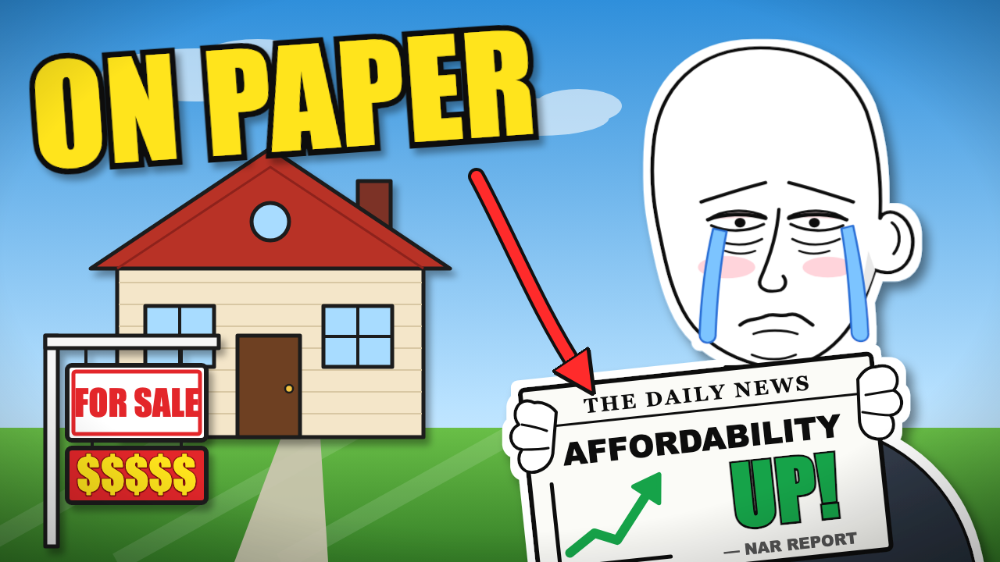

Тестовое задание: превью «на мемах»
Тема ролика: NAR says affordability is up. So why still can't you buy?


Какой мем и почему
Плачущий Вояк (Crying Wojak) — самый узнаваемый мем про бессилие перед рынком жилья. Он держит газету «AFFORDABILITY UP!» с зелёным графиком, а за спиной — дом с табличкой FOR SALE и ценой $$$$$: официальная статистика против реальности. Надпись ON PAPER объясняет мысль ролика за секунду и не повторяет заголовок.
Какие AI-инструменты
Claude — идея, отрисовка персонажа и сцены в векторе (SVG) и сборка. Читаемость проверена на размере ленты 246 × 138 px.
Сколько времени
Около 1,5 часа.